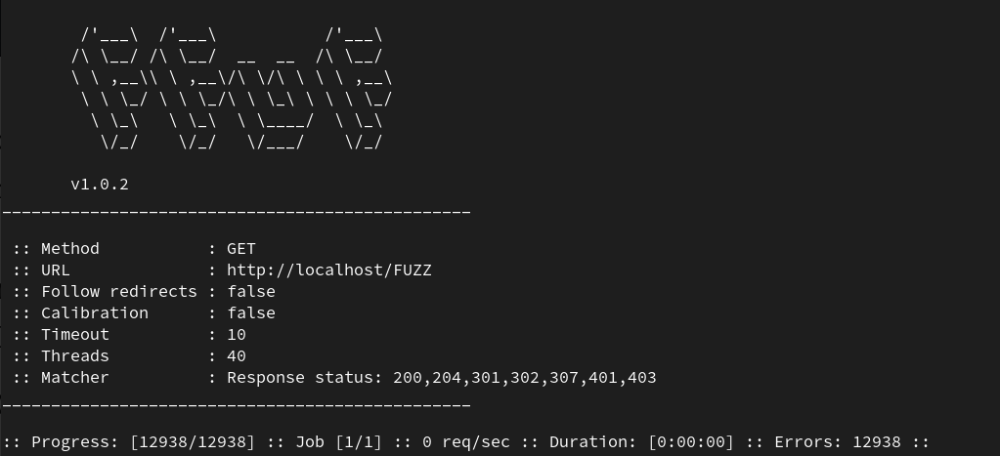

Web Fuzzing with FFUF
What is fuzzing?
Fuzzing is "the art of automatic bug finding", as described by the OWASP community. It is the act of sending various types of input in HTTP requests, trying to find an input or payload that causes the application to respond in unexpected ways and reveal a vulnerability. In the context of web applications, pentesters use fuzzing to discover directories and files that are hosted on the web server.
Fuzz Faster You Fool
FFUF, short for “Fuzz Faster you Fool”, is an open source web fuzzing tool to discover elements and content within web applications, or web servers. FFUF is known for its speed, flexibility and efficiency and is mostly used by Pentesters and Bug-Bounty hunters.

Directory Brute Forcing
FFUF takes two main arguments for brute forcing directories: -u for the target URL and -w for the wordlist. Multiple wordlists can be specified by a comma seperated list if required. Some of the most commonly used wordlists can be found under the GitHub SecLists repository, which categorizes wordlists under various types of fuzzing, even including commonly used passwords. To tell FFUZ where we would like to fuzz we place the word FUZZ where we want our wordlist items to be placed.
If we put everything together, we can craft the command for brute forcing:
ffuf -u http://<HOST>:<PORT>/FUZZ -w /path/to/wordlistFile Discovery
Sometimes we must find out what types of pages the website uses, like .html, .aspx, .php, etc. We can utilize the following wordlist in SecLists for extensions:
ffuf -u http://<HOST>:<PORT>/indexFUZZ -w web-extensions.txt:FUZZWhenever we found the possible extensions that are used by the web server, we can look for all files with those extensions with the -e flag:
ffuf -u http://<HOST>:<PORT>/FUZZ -w wordlist.txt -e .aspx,.html,.php,.txtRecursive Fuzzing
When we scan recursively, it automatically starts another scan under any newly identified directories until it has fuzzed the main website and all of its subdirectories. We can enable recursive scanning with the -recursion flag, the depth with the -recursion-depth flag and the extension with -e .php.
ffuf -u http://<HOST>:<PORT>/FUZZ -w wordlist.txt -recursion -recursion-depth 1 -e .php -vVHOST Discovery
Many websites have sub-domains that are not public and hence if we visit them in a browser, we would fail to connect. This is where we utilize VHosts Fuzzing on an IP we already have.
ffuf -w wordlist.txt -u http://<HOST>:<PORT>/ -H 'Host: FUZZ.<HOST>'Filtering Options
To display only responses with specific status codes, number of lines, response size, etc, we can make use of several flags:
-mc: specify Status Code-ml: specify amount of lines in response-mr: specify regex pattern-ms: specify response size-mw: specify amount of words in response
For example, to only show responses with a status code of 200 and 301, use:
ffuf -u http://<HOST>:<PORT>/FUZZ -w wordlist.txt -e .aspx,.html -mc 200,301Filtering on the other hand can really help in removing false positives from the results. A filter will remove any responses we dont't want to include:
-fw: filter by amount of words-fl: filter by number of lines-fs: filter by response size-fc: filter by status code-fr: filter by regex pattern
For example, to suppress all responses with a word length of 1000 in a VHOST discovery, we can do the following:
ffuf -u http://<HOST>:<PORT>/ -H 'Host: FUZZ.<HOST>' -fw 1000Request Fuzzing
Ffuf also allows use to fuzz at any position in HTTP headers. To fuzz a URL with a particular HTTP method just add the -X flag and specify the method.
GET Requests
Similarly to how one fuzzes various parts of a website, we can enumerate http parameters. In this example we try to fuzz for available parameters we can use on the admin.php page.
ffuf -u http://<HOST>:<PORT>/admin.php?FUZZ=key -w wordlist.txt -fs xxxPOST Requests
To fuzz the data field in a request, we can use the -d flag. We additionally have to add the -X POST to send POST requests.
ffuf -u http://<HOST>:<PORT>/admin.php -w wordlist.txt -X POST -d 'FUZZ=key' -H 'Content-Type: application/x-www-form-urlencoded' -fs xxx